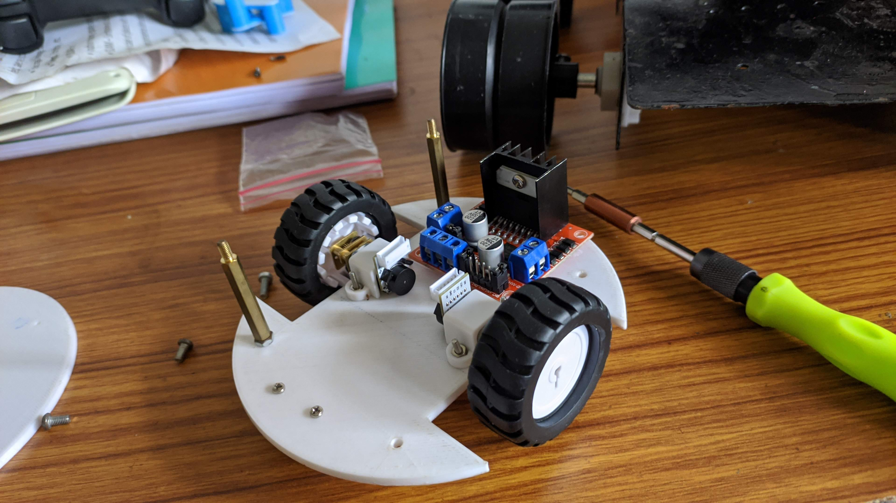
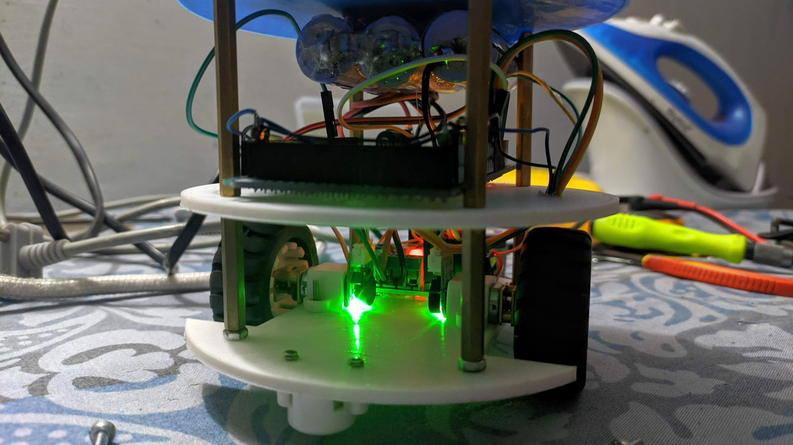
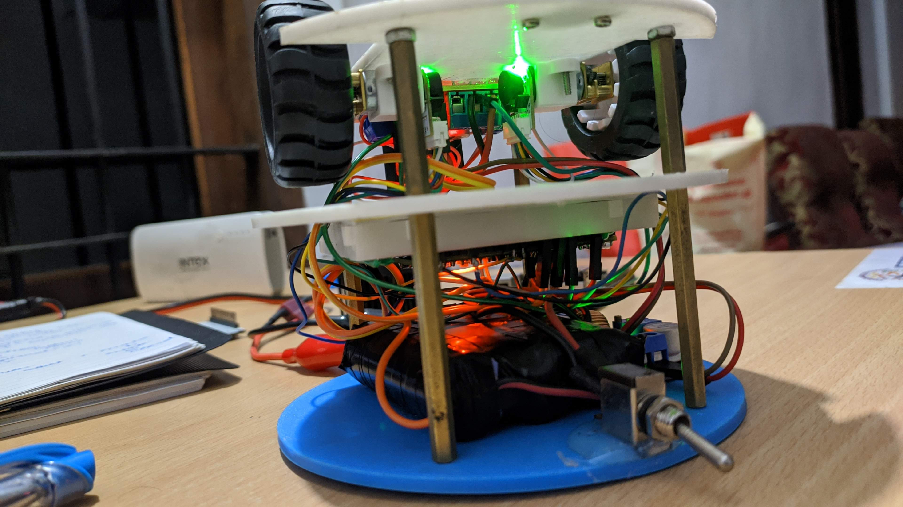
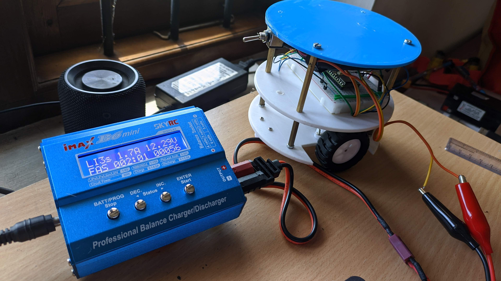

Development of a Low-Cost POV Robotics Educational Kit
Abstract
...
Introduction
...
Methodology
The development process began with detailed design and simulation studies in Fusion360. The CAD model was then converted to a URDF format and refined through 3D printing using PLA material. Key hardware components include:
- ...: ....
- ...: ....
- Upper Deck: ....
- Sensor Suite: ...






Results and Discussion
...
Conclusion
...
Future Scope
- ...
- ...
- ....
- ...
Follow along with new developments here